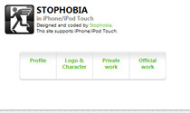
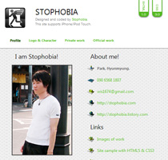

ある意味成長
最近グラビアの名前と顔が無意識的に覚えるようになりました。これをどう理解しちゃいいか今も分かりません。よくやったな（何を；；）と褒めている自分と、だからお前はあの有様なんだよとしかる自分が共存しています。僕はあくまでも美術品を観覧するつもりでグラビアの女の子を見ますけれども、たぶんそれは言い訳に過ぎないかもです。とにかく、彼女らの努力が無駄にならないよう、力を尽くして頑張りたいと思います。
最近グラビアの名前と顔が無意識的に覚えるようになりました。これをどう理解しちゃいいか今も分かりません。よくやったな（何を；；）と褒めている自分と、だからお前はあの有様なんだよとしかる自分が共存しています。僕はあくまでも美術品を観覧するつもりでグラビアの女の子を見ますけれども、たぶんそれは言い訳に過ぎないかもです。とにかく、彼女らの努力が無駄にならないよう、力を尽くして頑張りたいと思います。
法律には様々な犯罪に対しての厳しい処罰が書かれているが、根本的な目的は犯人を徹底に罰することではなく、皆が犯罪をしないことを望んでいるのでしょう。
たびたび不細工な自分にびっくりしたりするけど、客観的に、主観的に、自分より不細工な人も数え切れないほどいるわけです。たまには今の自分の状態が残念な顔から生み出されたのではと思うけど、そういう場合は僕より残念な顔をして成功している方が説明できません。整形してイケメンになったとしても、たぶん僕はほかの言い訳を探すと思います。その大体は人のせいにすることが多いでしょう。
私の趣味はエレキギター、インラインスケート、旅行など。特に旅行(だとしてもチョイ長い散歩のレベルです)が好きですけど、アメリカの旅行は日本や韓国のものとはサイズが違うらしい。期間も長くて1週間なんかじゃなく、1ヶ月くらい世界を回せるような感覚。引退してから残りの人生を旅しながら過ごしたいという人も少なくはないらしいです。でも、旅行の時間が短くて、厳しいほどもっと覚えに残る旅になるのではと、大変東洋的な考え方に沈んでみる私でした。でも、キャンピングカーでアメリカ一週はうらやましいものですね。
Tim Berners Lee博士のウェブブラウザーが最初動けた唯一のコンピュータはSteve Jobsの当時最新型マシンNeXT。他の会社ではまだウェブに関して関心がなかったからだといいます。最初の検索ロボットはWorld Wide Web Wanderer、最初のウェブ検索エンジンは検索ロボットをまだ駆動してなかったALIWEB。最初に検索窓を装置した検索エンジンは大学院生が作った「JumpStation」。これがまさかの、1993年までの話。1997年グーグルが出たことを考えたら技術の進歩って…
Vannevar Bush博士の革新的な発表から45年経って、人類最初の検索エンジン「Archie」が出現しました。その直後WWWがTim Berners Lee博士により作られました。WWW。簡単にいえますが、これはhttp、html、Web Browser, Web Serverを全部「最初」に作ったということになります。もっと恐ろしいのは、Tim Berners Lee博士はこの発明に関して特許を取ってませんでした。最初のウェブページはhttp://www.w3.org/History/
19921103-hypertext/hypertext/
WWW/TheProject.html
Vannevar Bush博士は1945年、「The Atlantic Monthly」誌にMemexという機会の概念を発表しました。今から65年前、HypertextとInternet、World Wide Web、Wikipediaの基礎概念はこうして発表されたのです。関連があるお互いの情報を結びつなぐ、グーグルが最近やっと再現している検索技術まで考案されていたという恐ろしい事実は、たまに現れるという預言者という人を目撃したような衝撃です。
目的に合うサイトを作り、検索上位になるため厳選されたキーワードをセット、そのキーワードと合致することを行っていく。他のサイトとリンクをつけたりつけられたりしながらサイトの評価は上げていく。評判は広がる。一度上位近くに上がったら、それからもっと頑張らないと落ちやすい。すごく簡単そうに見えますが、やはり検索上位にランクされるのは難しい。どうしてこんなに人生の流れと似ているのでしょうか。
①なにより「オードリー」の春日。僕は若林も良いです。ってゆうか、「オードリー」のチームが好きです。②中学生の時代はまってた「オレンジロード」の春日。なぜ鮎川に行かないのと、その年にもすごく気になっていたらしいです。鮎川、今も超タイプ（笑）。③ヤフージャパンの「春日」のイメージ検索結果は想定外。イメージ検索はあまりSEOと関係ないらしいですね。
SNSの出現以前にも、オンラインサービスの究極的な目的は新しい人間関係の開拓だと思います。人間関係の維持と発展はやっぱオフラインでしかできないですね。技術の進歩で1日内に地球のほとんどの場所に行けるのに、オンラインで出会うことだけでは物足りません。ご飯を食べて生きてる以上は、結論はオフラインだと思います。
①昨日までは韓国とアメリカでDDos攻撃と見られるハッキングがありました。今日はうちのウェブサイトとYoutubeまで接続できないですね。うちのは404ページも出ない様子で、恐ろしいです。なぜ毎年同じ攻撃が繰り返されるのにうまく守れないでしょうかね。ちなみに北朝鮮が有力な容疑者。②グーグルがOS開発計画を発表！全世界が注目！自体OSを開発したと言っているある国のバカな会社の話は昨日と一昨日の日記をご覧ください。
①昨日行われたT-max Windowの３時間を超えたプレゼンの内容を１文章でまとめると「米国とＭＳの独占から脱出」。しかし駆動された全ての自体開発アプリは全てWindowsXPで試演＋ActiveX支援。②招待されたVIPはみんな政財界人事。結局政府のショー？もしかしてこの化け物が官公署のPCに義務的に普及される日が来たら、カウントダウン・スタート。③あの化け物を生み出すためその会社の多くの人たちが離婚したり、病気になったりしたことを自慢そうに話したという。それはあなたの無能力と韓国の劣悪な開発環境を証明する恥ですよ。
韓国が自体技術で運営体制（OS）を作り上げました。自分の国で笑えないし。IT史上最高の詐欺事件に残る可能性がすごく高いです。今やMicrosoftも捨てようとするActiveXを使い続くため？いったい自分専用のアプリケーションも駆動できなくてWindowsXPで試演していたという事実は、この安物が何をパクっているのかやさしく説明しています。Microsoft,怒ったらハンパありません。
負けず嫌いというのは小人と何が違うのか？自分だけ勝ちぬけ続けて、人は気にしないことはどう考えたらいいのか？そういうのは賢さの問題か、心の問題なのか。その壁は、簡単そうで難しいですね。電車のなかでウェブサービスに関して考える時は博愛主義ですが、下車するときは急に負けず嫌いになる私でした。
朝は珍しく総武線が止まり、やむをえない遅刻。自分だけかと思ったら社員のほとんどが遅刻。特に出社時間帯の掛け込み乗り、許されない犯罪だと思います。おかげさまで全力疾走いたしました。
新しいHTML5サイトを企画しました。HTML5というのがまだ遠めだと思ったら、海外ではHTML5Galleryとか素敵なサイトも出現し、結構の人たちが集まって自分のサイトを自慢していたのです。良い勉強になるだろうと思ったこともあり、男の本音で自分も出さなきゃと思いました。
ヒーローは死なない。伝説になるだけ。そういう意味で、僕にとってはヒーローではないな。ネバーランドの建設から彼はオーバーランしたと思います。追悼式チケット予約サイトには5億件のアクセスがあって、160万人が応募したと話だけど。それくらいの価値はあり！！！一番かわいそうなのはネットで彼のロンドンコンサートチケットをプレミアムを払いながら買っていた本当のファンたち。
顔があまりにも自身がないので、特に夜の場合は絶対自分の顔写真を撮りません。最近はよくブログの持ち主がイケメンだったり可愛かったりして思わず持ってきたりするほどうらやましい人たちが溢れています。そういう人たちと町で会えにくいことが不思議なほど。
CSS3に対しての期待が大きいらしい。でも、これまでCSS2でも神業を疲労していたマスターたちに、それはアピールするだろうか。さらに、CSS2の時代が長かったことと、今のところCSS3特有の属性がまだブラウザー従属だという二つに関して真剣に考えないと。新しいといえみんな盲目的に従うほどの時代ではないのですから。そう言ってる私はなぜか勉強してるけど。。
新しいHTML5サイトを企画しました。HTML5というのがまだ遠めだと思ったら、海外ではHTML5Galleryだという素敵なサイトも出現し、結構の人たちが集まって自分のサイトを自慢していたのです。良い勉強になるだろうと思ったこともあり、男の本音で自分も出さなきゃと思いました。
Stophobia.comのiPhone/iPod Touch用CSSを完了しました。どうかしてもインパクトを与えたかったものです。CSS3の勉強だけはあるくらいできました。そして、画面サイズが1/3になる現象を避ける方法まで…

Stophobia.comを完成しました。一年半くらい使い続けてきた旧型ポートフォリオは今の自分の技とは相当違うものですので。UIに力を入れようとjQueryを勉強した結果、それも何か見えてきました。

このページはCSSを外した場合、またはJavascriptが適用されない場合露出されます。ブラウザーの設定を確認してください。IE6以下のブラウザーをご利用の場合、ファイヤーフォックスまたはサファリ、クロムの導入をご検討お願い申し上げます。